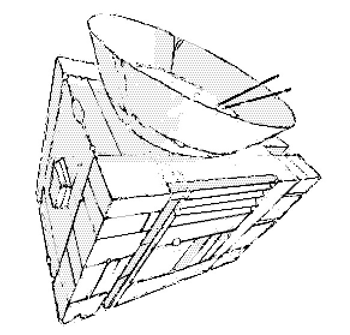

Neonev is a daughter of Rlionn.
During the first season, Neonev crossed Kanikule, and survived, . While most of Rlionn's Children do not stray too far from the Oasis, one of them has left the desert of Laeisth to travel Dinaisth.
They're the only immortal wandering the structure who must eat to make the energy needed to move, the food converter can turn matter into meals, heat up and purify liquids. It can also develop film.
The armor was designed to weather the storm and protect against flying debris, the sleeves can be removed.
incoming aliceffekt portalion opal inquisitors dei dain from saharaphorest neon hermetism nohlxeserre andes